Crosstalk Between Coplanar Waveguides
The files for this example can be found in the examples/cpw/ directory of the Palace source code.
In this example, we construct a frequency domain model to analyze the wave transmission, reflection, near-end crosstalk, and far-end crosstalk for a four-port system comprised of two side-by-side coplanar waveguides (CPW). Each CPW is characterized by a trace width $w = 30\text{ μm}$ and gap width $s = 18\text{ μm}$. The metal is modeled as an infinitely thin, perfectly conducting boundary surface on top of a sapphire dielectric substrate (parallel to C-axis: $\varepsilon_r = 11.5$, $\tan\delta = 8.6\times 10^{-5}$, perpendicular to C-axis: $\varepsilon_r = 9.3$, $\tan\delta = 3.0\times 10^{-5}$) of $500\text{ μm}$ thickness with the C-axis in the z-direction. This yields a characteristic impedance $Z_0 = 56.02\text{ }\Omega$ for each of the lines [1]. The center-to-center separating distance between the transmission lines on the substrate is $266\text{ μm}$, which means there is exactly $200\text{ μm}$ of ground plane between them.
A visualization of the computational domain is shown below.
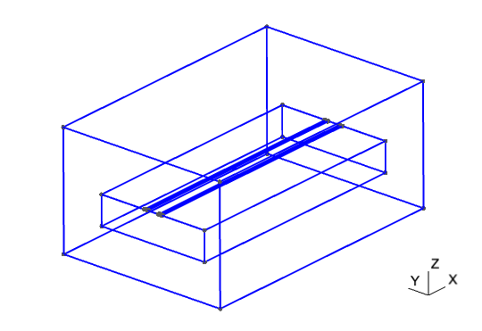
There are two different options for modeling the termination at the ends of the CPW:
- Lumped port: A multielement uniform lumped port can be used to terminate the CPW by connecting the center conductor to the ground plane on each side with impedance $Z = 2Z_0$.
- Wave port: We can solve a 2D boundary eigenvalue problem for the mode shape and propagation constants for the characteristic CPW mode, and use this to terminate the transmission line.
Views of the mesh boundaries for these two configurations are shown below. In both cases the computational domain is discretized using an unstructured tetrahedral mesh. The mesh files are mesh/cpw_wave.msh and mesh/cpw_lumped.msh, respectively.
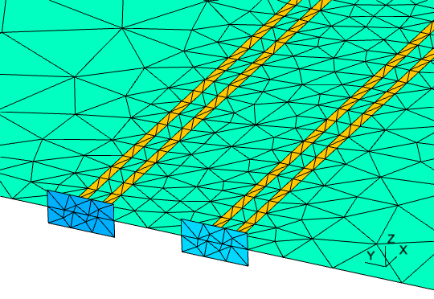 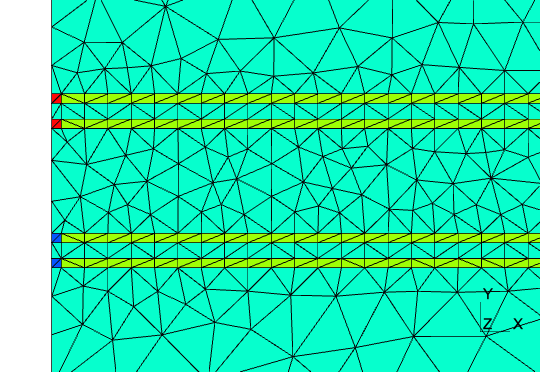
Likewise, there are two different options for how the system response is calculated over the desired frequency band:
- Uniform: Sample the frequency band with the full-fidelity model at equally spaced frequencies over the desired range.
- Adaptive: Use the full-fidelity model to sample the solution at a few adaptively selected frequency points in the desired band, and then construct a low-cost surrogate model which is used to compute the response over the entire band.
This leads to four possible configurations, for which there are four configuration files in the example directory: cpw_lumped_uniform.json, cpw_lumped_adaptive.json, cpw_wave_uniform.json, and cpw_wave_adaptive.json.
The frequency response is computed for the band $f\in[2.0,30.0]\text{ GHz}$. For the uniform sweep, a step size of $\Delta f=2.0\text{ GHz}$ is used, while the adaptive sweep employs a much finer step size $\Delta f=0.1\text{ GHz}$. The adaptive fast frequency sweep algorithm is given a tolerance of $1\times10^{-3}$ for choosing the sampling points; the simulation with uniform ports uses $9$ frequency samples and that with wave ports uses $10$. Despite the much finer frequency resolution, the adaptive frequency sweep simulations take roughly the same amount of time as the uniform ones where the resulting resolution is worse by a factor of $20$. Lastly, for all simulations, a single level of uniform mesh refinement is applied to the initial mesh and a first-order finite element approximation for the solution is used.
The results from the four different simulations are presented in the plots below.
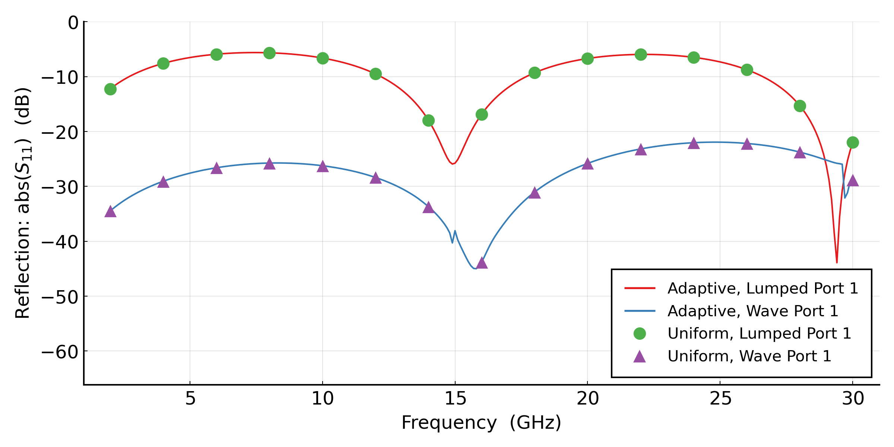 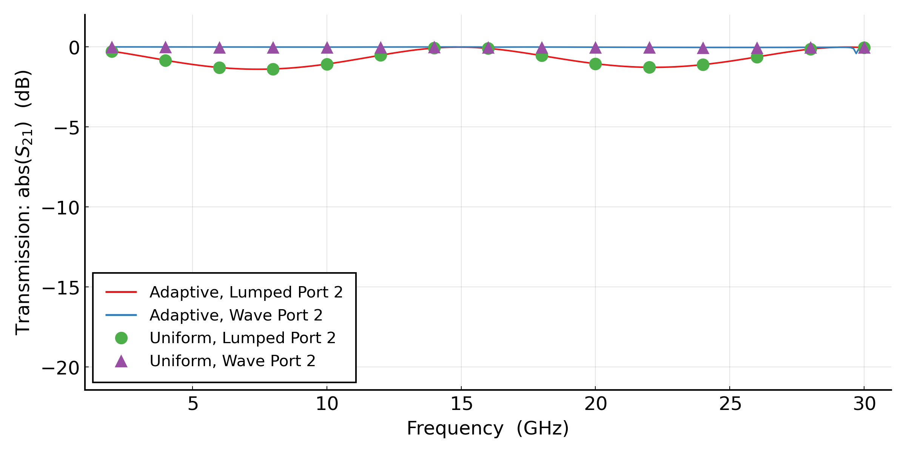 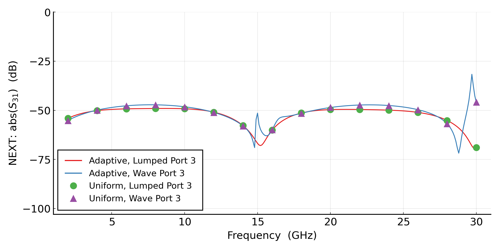 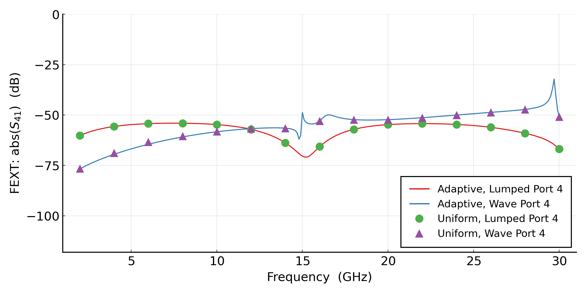
The first remark is that in both the lumped port and wave port cases, the adaptive fast frequency sweep results are very close to the true solutions sampled by the uniform sweeps.
Second, there is a discrepancy between the results using lumped ports and those with wave ports, namely the lumped port excitation exhibits much higher reflection that that for wave ports. This can be attributed to the coarse meshes used for these examples. Indeed, refining the mesh or increasing the order of the solution approximation resolves this issue and leads to better agreement between the lumped port and wave port results. See below for the results with again a single level of mesh refinement but $p = 2$ for the order of the solution space.
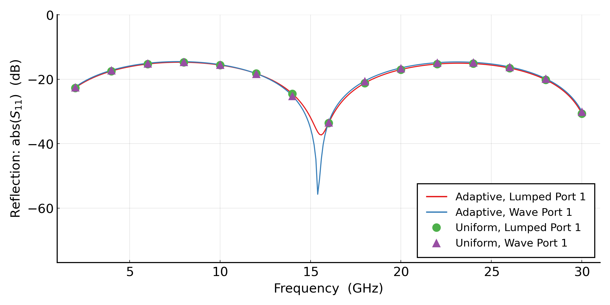 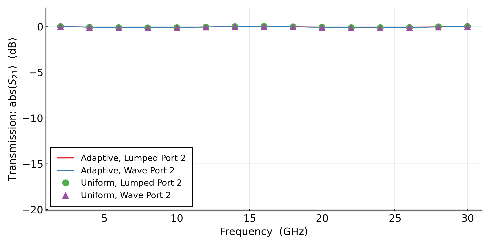 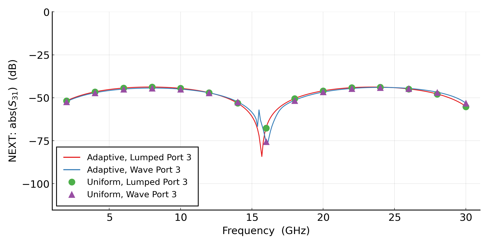 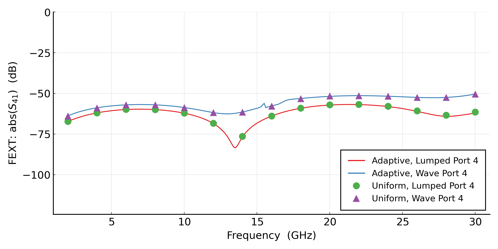
References
[1] H. J. Visser, Antenna Theory and Applications, Wiley, Hoboken, NJ, 2012.